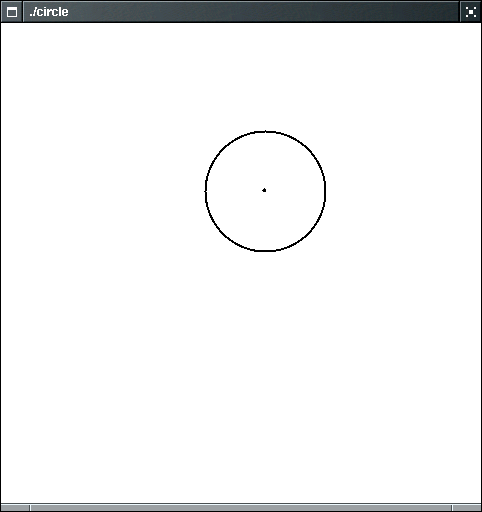

Point p(1,3);
Message greeting(p, "Hello, Window!");
cwin << greeting;
string greeting = "Hello";
cout << greeting.substr(0,4);
#include "ccc_time.h"
Time sometime;
The shorthand in this very common situation is:Time day_end = Time(23, 59, 59); /* the last second of the day */
Time day_end(23, 59, 59); /* the last second of the day */
Time now; /* the time this object is created */
Time later(); /* NO! */
sometime = Time(12, 5, 18); /* we already declared sometime */
|
Syntax 3.1: Constant Object Construction Class_name(construction parameters);
|
|
Syntax 3.2: Object Variable Definition Class_name variable_name(construction parameters);
|
now.get_seconds(); /* returns the seconds value of now */
now.get_minutes(); /* returns the minutes value of now */
now.get_hours(); /* returns the hours value of now */
now.add_seconds(1000); /* add 1000 seconds to the time stored in now */
now.set_hours(2); /* NO! Not a supported member function */
now.set_hours(9999); /* NO! Doesn't make sense */
now.add_seconds(1000); /* Changes now to move by 1000 seconds */
now.seconds_from(day_end); /* Computes number of seconds between now and day_end */
Employee harry("Hacker, Harry", 45000.00);
cout << "Name: " << harry.get_name() << "\n";
cout << "Salary: " << harry.get_salary() << "\n";
harry.set_salary(new_salary);
Circle c;
...
cout << c; /* NO! Won't display the circle */
cwin << c; /* The circle will appear in the graphics window */
cwin << Point(1,3);
Point p(1,3);
cwin << p << Circle(p,2.5);

Point p(1,3);
Point q(4,7);
Line s(p,q);
cwin << s;
Point p(1,3);
Message greeting(p, "Hello, Window!");
cwin << greeting;
|
|
||||||||||||||||||||||
|
|
cwin.coord(x_left, y_top, x_right, y_bottom)
cwin.coord(1, 11, 12, 33);
Output is now in terms of the new coordinate system:
cwin << Point(1, 11);
cwin << Point(2, 13);
/* etc. */
Example:string response = cwin.get_string(prompt);
string name = cwin.get_string("Please type your name:");
int age = cwin.get_int("Please enter your age:");
Point center = cwin.get_mouse("Enter center of circle:");
|
Name
|
Purpose
|
| cwin << x | Display the object x (a point, circle, line, message) |
| cwin.cord(x1,y1,x2,y2) | Set the coordinate system. (x1,y1) is the top left
corner, (x2,y2) is the
bottom right corner |
| cwin.get_string(p) | Displays prompt p and returns the entered string. |
| cwin.get_int(p) | Displays prompt p and returns the entered integer. |
| cwin.get_double(p) | Displays prompt p and returns the entered floating-point value. |
| cwin.get_mouse(p) | Displays prompt p and returns the mouse click point. |
| cwin.clear() | Clears window. |